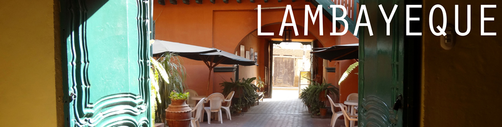
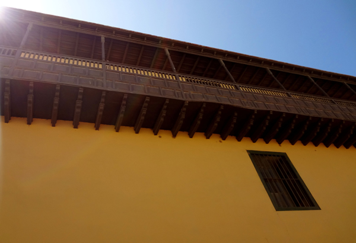
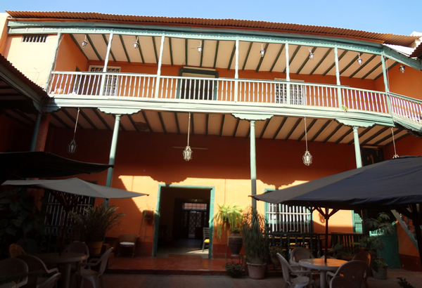
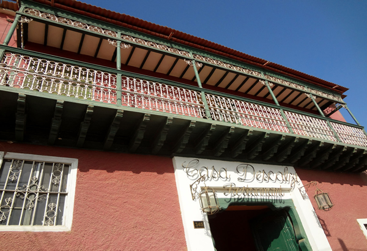

Spanish Colonial Architecture:
Explore the simply beautiful Spanish colonial architecture in the city of Lambayeque. This city has a distinct Spanish influence that Chiclayo does not offer. Many buildings in Lambayeque are still from the 1700s, including the Church of St. Peter, the colonial mansions of Casa Cuneo, Casa Desch, and Casa Montjoy, which boasts the biggest balcony in South America. Less congested than Chiclayo, Lambayeque is a great place to just walk around the cobbestone streets and enjoy the history that fills the area
| Location |
| The city of Lambayeque is just 20 miles (32 km) from Chiclayo, about a 30-minute drive. The Casa Montjoy is located at the intersection of Dos de Mayo and San Martin. |


